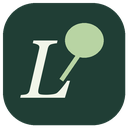

Last updated: November 11, 2026 · Son güncelleme: 11 Kasım 2026
LingoLeaf Privacy Policy
This policy explains what data the LingoLeaf browser extension (for Chrome and Microsoft Edge) handles, where it is stored, how Google user data is used, and how you can delete it.
LingoLeaf is a browser extension. The developer operates no server, and the extension contains no advertising, analytics or tracking. Your data stays in your browser and, if you choose, in your own accounts.
Data processed
- Your word list: saved words and phrases, their status (learning, learned, known), Turkish translations, your notes, example sentences, the address of the page where you saved a word, and dates.
- Settings and progress: colors, daily goal, per-site preferences, learning history and approximate reading time.
- Page text: the text of open English pages is processed locally in your browser for coloring and language detection; it is never sent anywhere or stored.
Where data is stored
- In your browser: all data is kept in the browser's extension storage (
chrome.storage.local). - Browser sync (optional): when enabled in settings, words, statuses, dates and Turkish translations are carried by the browser's own sync (
chrome.storage.sync) to browsers signed into the same Google or Microsoft account. This transfer is performed by your browser. - Google Drive (optional): only if you press Google ile bağlan (Connect with Google), all of the data above is stored in a single
lingoleaf.jsonfile in the hidden application data folder of your own Google Drive and synchronized between the browsers you connect.
Google user data: what is accessed and why
LingoLeaf requests only the https://www.googleapis.com/auth/drive.appdata scope, which lets the extension create, read and update its own hidden application data folder in your Drive. LingoLeaf does not access or request your other Drive files, your name, your email address or any other Google data.
- The access token received from Google is kept only in the browser's session storage and is used only for requests to the Google Drive API.
- The Drive file is transferred only between your browsers and Google. It is not sent to the developer or any third party, is not sold, is not used for advertising, and is not read by humans.
- LingoLeaf's use and transfer to any other app of information received from Google APIs will adhere to the Google API Services User Data Policy, including the Limited Use requirements.
Data sharing
LingoLeaf does not sell, rent, share or disclose any user data, including Google user data, to the developer or to any third party. No data is used for advertising, credit decisions, training of AI models or any purpose other than providing the word-list features described above.
Data retention and security
Data in the browser is kept until you delete it or uninstall the extension. The Drive file is kept in your own Google Drive until you delete it (see below). All communication with Google uses HTTPS. The Google access token expires after about one hour and is never written to disk by LingoLeaf.
Translation
Turkish translations use the browser's built-in, on-device Translator API. LingoLeaf does not send selected text to any external translation service. Language detection also uses the browser's local capability.
Deleting your data and revoking access
- Bağlantıyı kes (Disconnect) in settings stops Drive sync.
- To delete the Drive file: Google Drive → Settings → Manage apps → LingoLeaf → Delete hidden app data.
- To revoke Google access: myaccount.google.com/permissions → LingoLeaf → Remove access.
- Uninstalling the extension deletes all LingoLeaf data from the browser. You can export your word list first with Settings → Yedek indir (Download backup).
Changes and contact
If this policy changes, the current version will be published on this page. Questions: github.com/chtcngz/lingo-leaf/issues.
LingoLeaf gizlilik politikası
LingoLeaf bir tarayıcı eklentisidir. Geliştiricinin işlettiği bir sunucusu yoktur; reklam, analiz veya izleme aracı içermez. Verilerin senin tarayıcında ve, istersen, senin kendi hesaplarında kalır.
Hangi veriler işlenir
- Kelime listen: kaydettiğin kelimeler ve ifadeler, durumları (öğreniyorum, öğrendim, biliyorum), Türkçe karşılıkları, notların, örnek cümlelerin, kelimeyi eklediğin sayfanın adresi ve tarihler.
- Ayarların ve ilerlemen: renkler, günlük hedef, site bazındaki tercihlerin, öğrenme geçmişin ve yaklaşık okuma süren.
- Sayfa metni: renklendirme ve dil algılama için açık İngilizce sayfaların metni yalnızca tarayıcında, yerel olarak işlenir; hiçbir yere gönderilmez ve saklanmaz.
Nerede saklanır
- Tarayıcında: tüm veriler tarayıcının eklenti deposunda (
chrome.storage.local) tutulur. - Tarayıcı senkronu (isteğe bağlı): ayarlarda açıksa kelimeler, durumları, tarihleri ve Türkçe karşılıkları tarayıcının kendi senkronuyla (
chrome.storage.sync) aynı Google veya Microsoft hesabıyla oturum açtığın tarayıcılara taşınır. Bu aktarımı tarayıcın yapar. - Google Drive (isteğe bağlı): yalnızca Google ile bağlan düğmesine basarsan, yukarıdaki verilerin tamamı senin Google Drive'ındaki gizli uygulama veri klasöründe tek bir
lingoleaf.jsondosyasında saklanır ve bağladığın tarayıcılar arasında eşitlenir.
Google kullanıcı verileri
LingoLeaf yalnızca https://www.googleapis.com/auth/drive.appdata iznini ister. Bu izin, eklentinin Drive'ında yalnızca kendi gizli uygulama klasörünü oluşturup okumasına ve güncellemesine olanak tanır. LingoLeaf Drive'ındaki diğer dosyaları, adını, e-posta adresini veya başka bir Google verini görmez ve istemez.
- Google'dan alınan erişim izni (access token) yalnızca tarayıcının oturum belleğinde tutulur ve yalnızca Google Drive API'sine yapılan isteklerde kullanılır.
- Drive'daki dosya yalnızca senin tarayıcıların ile Google arasında aktarılır. Geliştiriciye veya başka bir üçüncü tarafa gönderilmez, satılmaz, reklam için kullanılmaz ve insanlar tarafından okunmaz.
- LingoLeaf'in Google API'lerinden aldığı bilgileri kullanması ve başka bir uygulamaya aktarması, Sınırlı Kullanım (Limited Use) koşulları dahil Google API Hizmetleri Kullanıcı Verileri Politikası'na uygundur.
Veri paylaşımı
LingoLeaf, Google kullanıcı verileri dahil hiçbir veriyi geliştiriciye veya üçüncü taraflara satmaz, kiralamaz, paylaşmaz. Veriler reklam, kredi kararları, yapay zekâ modeli eğitimi veya yukarıda anlatılan kelime listesi özellikleri dışında hiçbir amaçla kullanılmaz.
Saklama süresi ve güvenlik
Tarayıcıdaki veriler sen silene veya eklentiyi kaldırana kadar tutulur. Drive'daki dosya sen silene kadar kendi Google Drive'ında kalır. Google ile tüm iletişim HTTPS üzerinden yapılır. Google erişim izni yaklaşık bir saat sonra geçersiz olur ve LingoLeaf tarafından diske yazılmaz.
Çeviri
Türkçe çeviriler tarayıcının yerleşik, cihaz üzerinde çalışan çeviri özelliğiyle (Translator API) yapılır. LingoLeaf seçtiğin metni harici bir çeviri servisine göndermez. Dil algılama da tarayıcının yerel özelliğiyle yapılır.
Verilerini silme ve erişimi kaldırma
- Ayarlar'daki Bağlantıyı kes Drive eşitlemesini durdurur.
- Drive'daki dosyayı silmek için: Google Drive → Ayarlar → Uygulamaları yönet → LingoLeaf → Gizli uygulama verilerini sil.
- Google erişimini tamamen kaldırmak için: myaccount.google.com/permissions → LingoLeaf → Erişimi kaldır.
- Eklentiyi kaldırmak tarayıcıdaki tüm LingoLeaf verilerini siler. Kelime listeni önceden Ayarlar → Yedek indir ile dışa aktarabilirsin.
Değişiklikler ve iletişim
Bu politika değişirse güncel hali bu sayfada yayımlanır. Sorular için: github.com/chtcngz/lingo-leaf/issues.